Compute arbitrary terms - high-level generic assembly procedures¶
This section presents what is now the main generic assembly of GetFEM++. It is a high-level generic assembly in the sense that it is based on a weak form language to describe the weak formulation of boundary value problems of partial differential equations. It mainly has been developed to circumvent the difficulties with the previous low-level generic assembly (see Compute arbitrary terms - low-level generic assembly procedures) for which nonlinear terms were quite difficult to describe. Conversely, a symbolic differentiation algorithm is used with this version. It simplifies a lot the approximation of nonlinear coupled problems since only the weak form is necessary to be described, the tangent system being automatically computed. Moreover, the weak form language is compiled into optimized instructions before the evaluation on each integration point in order to obtain a an optimal computational cost.
The header file to be included to use the high-level generic assembly procedures in C++ is getfem/generic_assembly.h.
Differences in execution time between high and low level generic assembly¶
For basic linear assembly terms, the high level generic assembly is most of the time faster than the low-level one. This is due to the fact that the high-level generic assembly incorporates a compilation in basic optimized instructions and operates simplifications. On complexe terms it can be really faster due to the simplifications on repeated terms. On the other hand, the fact that the low-level generic assembly incorporates a mechanism to pre-compute on the reference element the linear term for elements with a linear transformation makes that it can be faster on a few simple linear terms. Of course, a possibility would be to incorporate the ability to pre-compute on the reference element the linear term for linear transformations in the high level generic assembly. However, it would be rather complicated due to the high genericity of the language. A consequence also is that exact integration is not allowed in the high level generic assembly.
Overview of the weak form language syntax¶
A specific weak form language has been developed to describe the weak formulation of boundary value problems. It is intended to be close to the structure of a standard weak formulation and it incorporates the following components:
- Variable names: A list of variables should be given. The variables are described on a finite element method or can be a simple vector of unknowns. For instance u, v, p, pressure, electric_field are valid variable names.
- Constant names: A list of constants could be given. The rules are the same as for the variables but no test functions can be associated to constants.
- Test functions: Can be used with respect to any of the variables. They are identified by the prefix Test_ followed by the corresponding variable name. For instance Test_u, Test_v, Test_p, Test_pressure, Test_electric_field. For the tangent system, second order test functions are denoted Test2_ followed by the variable name.
- Gradients: Spatial gradients of variables or test functions are identified by the prefix Grad_ followed by the variable name or by Test_ or Test2_ followed itself by the variable name. This is available for FEM variables only. For instance Grad_u, Grad_pressure, Grad_electric_field and Grad_Test_u, Grad_Test2_v. For vector fields, Div_u and Div_Test_u are some shortcuts for Trace(Grad_u) and Trace(Grad_Test_u), respectively.
- Hessians: The Hessian of a variable or test function is identified by the prefix Hess_ followed by the variable name or by Test_ or Test2_ followed itself by the variable name. This is available for FEM variables only. For instance Hess_u, Hess_v, Hess_p, Hess_Test2_v, Hess_Test_p, Hess_Test_pressure.
- A certain number of predefined scalar functions (sin(t), cos(t), pow(t,u), sqrt(t), sqr(t), Heaviside(t), ...). A scalar function can be applied to scalar or vector/matrix/tensor expressions. It applies componentwise. For functions having two arguments (pow(t,u), min(t,u) ...) if two non-scalar arguments are passed, the dimension have to be the same. For instance “max([1;2],[0;3])” will return “[1;3]”.
- A certain number of operators: +, -, *, /, :, ., .*, ./, @, '.
- Some constants: pi, meshdim (the dimension of the current mesh), qdim(u) and qdims(u) the dimensions of the variable u (the size for fixed size variables and the dimension of the vector field for FEM variables), Id(n) the identity matrix.
- Parentheses can be used to change the operations order in a standard way. For instance (1+2)*4 or (u+v)*Test_u are valid expressions.
- The access to a component of a vector/matrix/tensor can be done by following a term by a left parenthesis, the list of components and a right parenthesis. For instance [1,1,2](3) is correct and will return 2. Note that indices are assumed to begin by 1 (even in C++ and with the python interface). A colon can replace the value of an index in a Matlab like syntax.
- Explicit vectors: For instance [1;2;3;4] is an explicit vector of size four. Each component can be an expression.
- Explicit matrices: For instance [1,3;2,4] and [[1,2],[3,4]] denote the same 2x2 matrix. Each component can be an expression.
- Explicit fourth order tensors: example of explicit 3x2x2x2 fourth order tensor in the nested format: [[[[1,2,3],[1,2,3]],[[1,2,3],[1,2,3]]],[[[1,2,3],[1,2,3]],[[1,2,3],[1,2,3]]]].
- X is the current coordinate on the real element, X(i) is its i-th component.
- Normal is the outward unit normal vector to a boundary, when integrating on a domain boundary, or the unit normal vector to a level-set when integrating on a level-set with a mesh_im_level_set method. In the latter case, the normal vector is in the direction of the level-set function gradient.
- Reshape(t, i, j, ...): Reshape a vector/matrix/tensor. Note that all tensors in GetFEM++ are stored in the Fortran order.
- A certain number of linear and nonlinear operators (Trace, Norm, Det, Deviator, Contract, ...). The nonlinear operators cannot be applied to test functions.
- Diff(expression, variable): The possibility to explicit differentiate an expression with respect to a variable (symbolic differentiation).
- Diff(expression, variable, direction): computes the derivative of expression with respect to variable in the direction direction.
- Grad(expression): When possible, symbolically derive the gradient of the given expression.
- Possiblility of macro definition (in the model, the ga_workspace object or directly in the assembly string). The macros should be some valid expressions that are expanded inline at the lexical analysis phase (if they are used several times, the computation is automatically factorized at the compilation stage).
- Interpolate(variable, transformation): Powerful operation which allows to interpolate the variables, or test functions either on the same mesh on other elements or on another mesh. transformation is an object stored by the workspace or model object which describes the map from the current point to the point where to perform the interpolation. This functionality can be used for instance to prescribe periodic conditions or to compute mortar matrices for two finite element spaces defined on different meshes or more generally for fictitious domain methods such as fluid-structure interaction.
- Elementary_transformation(variable, transformation): Allow a linear tranformation defined at the element level (i.e. not possible to define at the gauss point level). This feature has been added mostly for defining a reduction for plate elements (projection onto low-level vector element such as rotated RT0). transformation is an object stored by the workspace or model object which describes the trasformation for a particular element.
Some basic examples¶
The weak formulation for the Poisson problem on a domain 
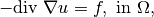
with Dirichlet boundary conditions 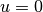 on 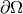 is classically
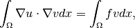
for all test functions  vanishing on .
The corresponding expression on the assembly string is:
vanishing on .
The corresponding expression on the assembly string is:
Grad_u.Grad_Test_u - my_f*Test_u
where my_f is the expression of the source term. If now the equation is
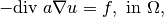
for a a scalar coefficient, the corresponding assembly string is:
a*Grad_u.Grad_Test_u - my_f*Test_u
where a has to be declared as a scalar constant or a scalar field. Not that is is also possible to describe it explicitly. For instance the problem
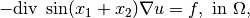
where 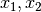 are the coordinates on the mesh, can be expressed:
sin(X(1)+X(2))*Grad_u.Grad_Test_u - my_f*Test_u
Another classical equation is linear elasticity:
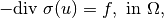
for  a vector field and 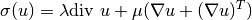 when isotropic linear elasticity is considered. The corresponding assembly string to describe the weak formulation can be written:
a vector field and 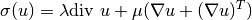 when isotropic linear elasticity is considered. The corresponding assembly string to describe the weak formulation can be written:
(lambda*Trace(Grad_u)*Id(qdim(u)) + mu*(Grad_u+Grad_u')):Grad_Test_u - my_f.Test_u
or:
lambda*Div_u*Div_Test_u + mu*(Grad_u + Grad_u'):Grad_Test_u - my_f.Test_u
Here again, the coefficients lambda and mu can be given constants, or scalar field or explicit expression or even expression coming from some other variables in order to couples some problems. For instance, if the coefficients depends on a temperature field one can write:
my_f1(theta)*Div_u*Div_Test_u
+ my_f2(theta)*(Grad_u + Grad_u'):Grad_Test_u - my_f.Grad_Test_u
where theta is the temperature which can be the solution to a Poisson equation:
Grad_theta.Grad_Test_theta - my_f*Grad_Test_theta
and my_f1 and my_f2 are some given functions. Note that in that case, the problem is nonlinear due to the coupling, even if the two functions my_f1 and my_f2 are linear.
Derivation order and symbolic differentiation¶
The derivation order of the assembly string is automatically detected. This means that if no test functions are found, the order will be considered to be 0 (potential energy), if first order test functions are found, the order will be considered to be 1 (weak formulation) and if both first and second order test functions are found, the order will be considered to be 2 (tangent system).
In order to perform an assembly (see next section), one should specify the order (0, 1 or 2). If an order 1 string is furnished and an order 2 assembly is required, a symbolic differentiation of the expression is performed. The same if an order 0 string is furnished and if an order 1 or 2 assembly is required. Of course, the converse is not true. If an order 1 expression is given and an order 0 assembly is expected, no integration is performed. This should not be generally not possible since an arbitrary weak formulation do not necessary derive from a potential energy.
The standard way to use the generic assembly is to furnish order 1 expressions (i.e. a weak formulation). If a potential energy exists, one may furnish it. However, it will be derived twice to obtain the tangent system which could result in complicated expressions. For nonlinear problems, it is not allowed to furnish order 2 expressions directly. The reason is that the weak formulation is necessary to obtain the residual. So nothing could be done with a tangent term without having the corresponding order 1 term.
IMPORTANT REMARK: Note that for coupled problems, a global potential frequently do not exists. So that the part of problems directly defined with a potential may be difficult to couple. To illustrate this, if you defined a potential with some parameters (elasticity coefficients for instance), and the couplingconsists in a variation of these coefficients with respect to another variable, then the weak formulation do not consist of course in the derivative of the potential with respect to the coefficients which has generally no sense. This is the reason why the definition through a potential should be the exception.
C++ Call of the assembly¶
Note that the most natural way to use the generic assembly is by the use of the generic assembly bricks of the model object, see Section Generic assembly bricks. It is however also possible to use the high level generic assembly on its own.
The generic assembly is driven by the object getfem::ga_workspace defined in getfem/getfem_generic_assembly.h.
There is two ways to define a getfem::ga_workspace object. It can depend on a model (see The model description and basic model bricks) and should be declared as:
getfem::ga_workspace workspace(md);
with md a previously define getfem::model object. In that case the variable and constant considered are the one of the model. The second way it to define an independent getfem::ga_workspace object by:
getfem::ga_workspace workspace;
In that case, the variable and constant have to be added to the workspace. This can be done thanks to the following methods:
workspace.add_fem_variable(name, mf, I, V);
workspace.add_fixed_size_variable(name, I, V);
workspace.add_fem_constant(name, mf, V);
workspace.add_fixed_size_constant(name, V);
workspace.add_im_data(name, imd, V);
where name is the variable/constant name (see in the next sections the restriction on possible names), mf is the getfem::mesh_fem object describing the finite element method, I is an object of class gmm::sub_interval indicating the interval of the variable on the assembled vector/matrix and V is a getfem::base_vector being the value of the variable/constant. The last method add a constant defined on an im_data object imd which allows to store scalar/vector/tensor field informations on the integration points of an mesh_im object.
Once it is declared and once the variables and constant are declared, it is possible to add assembly string to the workspace with:
workspace.add_expression("my expression", mim, rg = all_convexes());
where "my expression" is the assembly string, mim is a getfem::mesh_im object and rg if an optional valid region of the mesh corresponding to mim.
As it is explained in the previous section, the order of the string will be automatically detected and a symbolic differentiation will be performed to obtain the corresponding tangent term.
Once assembly strings are added to the workspace, is is possible to call:
workspace.assembly(order);
where order should be equal to 0 (potential energy), 1 (residual vector) or 2 (tangent term, or stiffness matrix for linear problems). The result of the assembly is available as follows:
workspace.assembled_potential() // For order = 0
workspace.assembled_vector() // For order = 1
workspace.assembled_matrix() // For order = 2
By default, the assembled potential, vector and matrix is initialized to zero at the beginning of the assembly. It is however possible (and recommended) to set the assembly vector and matrix to external ones to perform an incremental assembly. The two methods:
workspace.set_assembled_vector(getfem::base_vector &V);
workspace.set_assembled_matrix(getfem::model_real_sparse_matrix &K);
allows to do so. Be aware to give a vector and a matrix of the right dimension.
Note also that the method:
workspace.clear_expressions();
allows to cancel all furnished expressions and allows to re-use the same workspace for another assembly.
It is also possible to call the generic assembly from the Python/Scilab/Matlab interface. See gf_asm command of the interface for more details.
C++ assembly examples¶
As a first example, if one needs to perform the assembly of a Poisson problem
the stiffness matrix is given
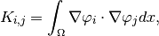
and will be assembled by the following code:
getfem::ga_workspace workspace;
getfem::size_type nbdof = mf.nb_dof();
getfem::base_vector U(nbdof);
workspace.add_fem_variable("u", mf, gmm::sub_interval(0, nbdof), U);
workspace.add_expression("Grad_u.Grad_Test_u", mim);
getfem::model_real_sparse_matrix K(nbdof, nbdof);
workspace.set_assembled_matrix(K);
workspace.assembly(2);
where of course, mf is supposed to be an already declared getfem::mesh_fem object and mim a already declared getfem::mesh_im object on the same mesh. Note that the value of the variable do not really intervene because of the linearity of the problem. This allows to pass getfem::base_vector(nbdof) as the value of the variable which will not be used. Note also that two other possible expressions for exactly the same result for the assembly string are "Grad_Test2_u.Grad_Test_u" (i.e. an order 2 expression) or "Norm_sqr(Grad_u)/2" (i.e. a potential). In fact other possible assembly string will give the same result such as "Grad_u.Grad_u/2" or "[Grad_u(1), Grad_u(2)].[Grad_Test_u(1), Grad_Test_u(2)]" for two-dimensional problems. However, the recommendation is preferably to give an order 1 expression (weak formulation) if there is no particular reason to prefer an order 0 or an order 2 expression.
As a second example, let us consider a coupled problem, for instance the mixed problem of incompressible elasticity given by the equations
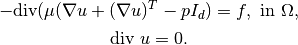
where u is the vector valued displacement and p the pressure. The assembly of the matrix for the whole coupled system can be performed as follows:
getfem::ga_workspace workspace;
getfem::size_type nbdofu = mf_u.nb_dof();
getfem::size_type nbdofp = mf_p.nb_dof();
getfem::base_vector U(nbdofu);
getfem::base_vector P(nbdofp);
getfem::base_vector vmu(1); vmu[0] = mu;
workspace.add_fem_variable("u", mf_u, gmm::sub_interval(0, nbdofu), U);
workspace.add_fem_variable("p", mf_p, gmm::sub_interval(nbdofu, nbdofp), P);
workspace.add_fixed_size_constant("mu", vmu);
workspace.add_expression("2*mu*Sym(Grad_u):Grad_Test_u"
"- p*Trace(Grad_Test_u) - Test_p*Trace(Grad_u)", mim);
getfem::model_real_sparse_matrix K(nbdofu+nbdofp, nbdofu+nbdofp);
workspace.set_assembled_matrix(K);
workspace.assembly(2);
where, here, mf_u and mf_p are supposed to be some already declared getfem::mesh_fem objects defined on the same mesh, mim a already declared getfem::mesh_im object and mu is the Lame coefficient. It is also possible to perform the assembly of the sub-matrix of this system separately.
Let us see now how to perform the assembly of a source term. The weak formulation of a volumic source term is
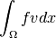
where  is the source term and the test function. The corresponding assembly can be written:
is the source term and the test function. The corresponding assembly can be written:
getfem::ga_workspace workspace;
getfem::size_type nbdofu = mf_u.nb_dof();
getfem::base_vector U(nbdofu);
workspace.add_fem_variable("u", mf_u, gmm::sub_interval(0, nbdofu), U);
workspace.add_fem_constant("f", mf_data, F);
workspace.add_expression("f*Test_u", mim);
getfem::base_vector L(nbdofu);
workspace.set_assembled_vector(L);
workspace.assembly(1);
if the source term is describe on a finite element mf_data and the corresponding vector of degrees of freedom F. Explicit source terms are also possible. For instance:
getfem::ga_workspace workspace;
getfem::size_type nbdofu = mf_u.nb_dof();
getfem::base_vector U(nbdofu);
workspace.add_fem_variable("u", mf_u, gmm::sub_interval(0, nbdofu), U);
workspace.add_expression("sin(X(1)+X(2))*Test_u", mim);
getfem::base_vector L(nbdofu);
workspace.set_assembled_vector(L);
workspace.assembly(1);
is also valid. If the source term is a boundary term (in case of a Neumann condition) the only difference is that the mesh region corresponding to the boundary have to be given as follows:
workspace.add_expression("sin(X(1)+X(2))*Test_u", mim, region);
where region is the mesh region number.
As another example, let us describe a simple nonlinear elasticity problem. Assume that we consider a Saint-Venant Kirchhoff constitutive law which means that we consider the following elastic energy on a body of reference configuration :
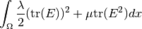
where 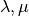 are the Lamé coefficients and  is the strain tensor given by 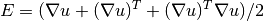.
is the strain tensor given by 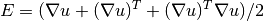.
This is possible to perform the assembly of the corresponding tangent problem as follows:
getfem::ga_workspace workspace;
getfem::size_type nbdofu = mf_u.nb_dof();
getfem::base_vector vlambda(1); vlambda[0] = lambda;
getfem::base_vector vmu(1); vmu[0] = mu;
workspace.add_fem_variable("u", mf_u, gmm::sub_interval(0, nbdofu), U);
workspace.add_fixed_size_constant("lambda", vlambda);
workspace.add_fixed_size_constant("mu", vmu);
workspace.add_expression("lambda*sqr(Trace(Grad_u+Grad_u'+Grad_u'*Grad_u))"
"+ mu*Trace((Grad_u+Grad_u'+Grad_u'*Grad_u)"
"*(Grad_u+Grad_u'+Grad_u'*Grad_u))", mim);
getfem::base_vector L(nbdofu);
workspace.set_assembled_vector(V);
workspace.assembly(1);
getfem::model_real_sparse_matrix K(nbdofu, nbdofu);
workspace.set_assembled_matrix(K);
workspace.assembly(2);
and to adapt a Newton-Raphson algorithm to solve that nonlinear problem. Of course the expression is rather repetitive and it would be preferable to define some intermediate nonlinear operators. However, note that repeated expressions are automatically detected and computed only once in the assembly.
The last example is the assembly of the stiffness matrix of an order four problem, the Kirchhoff-Love plate problem:
getfem::ga_workspace workspace;
getfem::size_type nbdofu = mf_u.nb_dof();
getfem::base_vector vD(1); vD[0] = D;
getfem::base_vector vnu(1); vnu[0] = nu;
workspace.add_fem_variable("u", mf_u, gmm::sub_interval(0, nbdofu), U);
workspace.add_fixed_size_constant("D", vD);
workspace.add_fixed_size_constant("nu", vnu);
workspace.add_expression("D*(1-nu)*(Hess_u:Hess_Test_u) -"
"D*nu*Trace(Hess_u)*Trace(Hess_Test_u)", mim);
getfem::model_real_sparse_matrix K(nbdofu, nbdofu);
workspace.set_assembled_matrix(K);
workspace.assembly(2);
with D the flexion modulus and nu the Poisson ratio.
The tensors¶
Basically, what is manipulated in the weak form language are tensors. This can be order 0 tensors in scalar expressions (for instance in 3+sin(pi/2)), order 1 tensors in vector expressions (such as X.X or Grad_u if u is a scalar variable), order 2 tensors for matrix expressions and so on. For efficiency reasons, the language manipulates tensors up to order six. The language could be easily extended to support tensors of order greater than six but it may lead to inefficient computations. When an expression contains test functions (as in Trace(Grad_Test_u) for a vector field u), the computation is done for each test functions, which means that the tensor implicitly have a supplementary component. This means that, implicitly, the maximal order of manipulated tensors are in fact six (in Grad_Test_u:Grad_Test2_u there are two components implicitly added for first and second order test functions).
Order four tensors are necessary for instance to express elasticity tensors or in general to obtain the tangent term for vector valued unknowns.
The variables¶
A list of variables should be given to the ga_worspace object (directly or through a model object). The variables are described on a finite element method or can be a simple vector of unknowns. This means that it is possible also to couple algebraic equations to pde ones on a model. A variable name should begin by a letter (case sensitive) or an underscore followed by a letter, a number or an underscore. Some name are reserved, this is the case of operators names (Det, Norm, Trace, Deviator, ...) and thus cannot be used as variable names. The name should not begin by Test_, Test2_, Grad_, Div_ or Hess_. The variable name should not correspond to a predefined function (sin, cos, acos ...) and to constants (pi, Normal, X, Id ...).
The constants or data¶
A list of constants could also be given to the ga_worspace object. The rule are the same as for the variables but no test function can be associated to constants and there is no symbolic differentiation with respect to constants. Scalar constants are often defined to represent the coefficients which intervene in constitutive laws. Additionally, constants can be some scalar/vector/tensor fields defined on integration points via a im_data object (for instance for some implementation of the approximation of constitutive laws such as plasticity).
Test functions¶
Each variable is associated with first order and second order test functions. The first order test function are used in the weak formulation (which derive form the potential equation if it exists) and the second order test functions are used in the tangent system. For a variable u the associated test functions are Test_u and Test2_u. The assembly string have to be linear with respect to test functions. As a result of the presence of the term Test_u on a assembly string, the expression will be evaluated for each shape function of the finite element corresponding to the variable u. On a given element, if the finite element have N shape functions ans if u is a scalar field, the value of Test_u will be the value of each shape function on the current point. So Test_u return if face a vector of N values. But of course, this is implicit in the language. So one do not have to care about this.
Gradient¶
The gradient of a variable or of test functions are identified by Grad_ followed by the variable name or by Test_ followed itself by the variable name. This is available for FEM variables (or constants) only. For instance Grad_u, Grad_v, Grad_p, Grad_pressure, Grad_electric_field and Grad_Test_u, Grad_Test_v, Grad_Test_p, Grad_Test_pressure, Grad_Test_electric_field. The gradient is either a vector for scalar variables or a matrix for vector field variables. In the latter case, the first index corresponds to the vector field dimension and the second one to the index of the partial derivative. Div_u and Div_Test_u are some optimized shortcuts for Trace(Grad_u) and Trace(Grad_Test_u), respectively.
Hessian¶
Similarly, the Hessian of a variable or of test functions are identified by Hess_ followed by the variable name or by Test_ followed itself by the variable name. This is available for FEM variables only. For instance Hess_u, Hess_v, Hess_p, Hess_pressure, Hess_electric_field and Hess_Test_u, Hess_Test_v, Hess_Test_p, Hess_Test_pressure, Hess_Test_electric_field. The Hessian is either a matrix for scalar variables or a third order tensor for vector field variables. In the latter case, the first index corresponds to the vector field dimension and the two remaining to the indices of partial derivatives.
Predefined scalar functions¶
A certain number of predefined scalar functions can be used. The exhaustive list is the following and for most of them are equivalent to the corresponding C function:
- sqr(t) (the square of t, equivalent to t*t), pow(t, u) (t to the power u), sqrt(t) (square root of t), exp(t), log(t), log10(t)
- sin(t), cos(t), tan(t), asin(t), acos(t), atan(t), atan2(t, u)
- sinh(t), cosh(t), tanh(t), asinh(t), acosh(t), atanh(t)
- erf(t), erfc(t)
- sinc(t) (the cardinal sine function sin(t)/t)
- Heaviside(t) (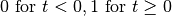)
- sign(t)
- abs(t)
- pos_part(t) (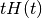)
- reg_pos_part(t, eps) (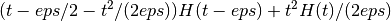)
- neg_part(t) (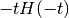), max(t, u), min(t, u)
A scalar function can be applied to a scalar expression, but also to a tensor one. If is is applied to a tensor expression, is is applied componentwise and the result is a tensor with the same dimensions. For functions having two arguments (pow(t,u), min(t,u) ...) if two non-scalar arguments are passed, the dimension have to be the same. For instance “max([1;2],[0;3])” will return “[0;3]”.
User defined scalar functions¶
It is possible to add a scalar function to the already predefined ones. Note that the generic assembly consider only scalar function with one or two parameters. In order to add a scalar function to the generic assembly, one has to call:
ga_define_function(name, nb_args, expr, der1="", der2="");
ga_define_function(name, getfem::pscalar_func_onearg f1, der1="");
ga_define_function(name, getfem::pscalar_func_twoargs f2, der1="", der2="");
where name is the name of the function to be defined, nb_args is equal to 1 or 2. In the first call, expr is a string describing the function in the generic weak form language and using t as the first variable and u as the second one (if nb_args is equal to 2). For instance, sin(2*t)+sqr(t) is a valid expression. Note that it is not possible to refer to constant or data defined in a ga_workspace object. der1 and der2 are the expression of the derivatives with respect to t and u. They are optional. If they are not furnished, a symbolic differentiation is used if the derivative is needed. If der1 and der2 are defined to be only a function name, it will be understand that the derivative is the corresponding function. In the second call, f1 should be a C pointer on a scalar C function having one scalar parameter and in the third call, f2 should be a C pointer on a scalar C function having two scalar parameters.
Additionally,:
bool ga_function_exists(name)
return true is a function name is already defined and:
ga_undefine_function(name)
cancel the definition of an already define function (it has no action if the function does not exist) which allow to redefine a function.
Derivatives of defined scalar functions¶
It is possible to refer directly to the derivative of defined functions by adding the prefix Derivative_ to the function name. For instance, Derivative_sin(t) will be equivalent to cos(t). For two arguments functions like pow(t,u) one can refer to the derivative with respect to the second argument with the prefix Derivative_2_ before the function name.
Binary operations¶
A certain number of binary operations between tensors are available:
- + and - are the standard addition and subtraction of scalar, vector, matrix or tensors.
- * stands for the scalar, matrix-vector, matrix-matrix or (fourth order tensor)-matrix multiplication.
- / stands for the division by a scalar.
- . stands for the scalar product of vectors, or more generally to the contraction of a tensor with respect to its last index with a vector or with the first index of another tensor. Note that * and . are equivalent for matrix-vector or matrix-matrix multiplication.
- : stands for the Frobenius product of matrices or more generally to the contraction of a tensor with respect to the two last indices with a matrix. Note that * and : are equivalent for (fourth order tensor)-matrix multiplication.
- .* stands for the multiplication of two vectors/matrix/tensor componentwise.
- ./ stands for the division of two vectors/matrix/tensor componentwise.
- @ stands for the tensor product.
- Contract(A, i, B, j) stands for the contraction of tensors A and B with respect to the ith index of A and jth index of B. The first index is numbered 1. For instance Contract(V,1,W,1) is equivalent to V.W for two vectors V and W.
- Contract(A, i, j, B, k, l) stands for the double contraction of tensors A and B with respect to indices i,j of A and indices k,l of B. The first index is numbered 1. For instance Contract(A,1,2,B,1,2) is equivalent to A:B for two matrices A and B.
Unary operators¶
- - the unary minus operator: change the sign of an expression.
- ' stands for the transpose of a matrix or line view of a vector. It a tensor A is of order greater than two,``A’`` denotes the inversion of the two first indices.
- Contract(A, i, j) stands for the contraction of tensor A with respect to its ith and jth indices. The first index is numbered 1. For instance, Contract(A, 1, 2) is equivalent to Trace(A) for a matrix A.
- Swap_indices(A, i, j) exchange indices number i and j. The first index is numbered 1. For instance Swap_indices(A, 1, 2) is equivalent to A' for a matrix A.
- Index_move_last(A, i) move the index number i in order to be the ast one. For instance, if A is a fourth order tensor 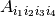, then the result of Index_move_last(A, 2) will be the tensor 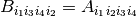. For a matrix, Index_move_last(A, 1) is equivalent to A'.
exchange indices number i and j. The first index is numbered 1. For instance Swap_indices(A, 1, 2) is equivalent to A' for a matrix A.
Parentheses¶
Parentheses can be used in a standard way to change the operation order. If no parentheses are indicated, the usually priority order are used. The operations + and - have the lower priority (with no distinction), then *, /, :, ., .*, ./, @ with no distinction and the higher priority is reserved for the unary operators - and '.
Explicit vectors¶
The weak form language allows to define explicit vectors (i.e. order 1 tensors) with the notation [a,b,c,d,e], i.e. an arbitrary number of components separated by a comma (note the separation with a semicolon [a;b;c;d;e] is also permitted), the whole vector beginning with a right bracket and ended by a left bracket. The components can be some numeric constants, some valid expressions and may also contain test functions. In the latter case, the vector has to be homogeneous with respect to the test functions. This means that a construction of the type [Test_u; Test_v] is not allowed. A valid example, with u as a scalar field variable is [5*Grad_Test_u(2), 2*Grad_Test_u(1)]. Note also that using the quite opertor (transpose), an expression [a,b,c,d,e]' stands for ‘row vector`, i.e. a 1x5 matrix.
Explicit matrices¶
Similarly to explicit vectors, it is possible to define explicit matrices (i.e. order 2 tensors) with the notation [[a,b],[c,d]], i.e. an arbitrary number of columns vectors separated by a comma (the syntax [a,c;b,d] of lines separated by a semicolon is also permitted). For instance [[11,21],[12,22],[13,23]] and [11,12,13;21,22,23] both represent the same 2x3 matrix. The components can be some numeric constants, some valid expressions and may also contain test functions.
Explicit tensors¶
Explicit tensors of any order are permitted with the nested format. A tensor of order n is written as a succession of tensor of order n-1 of equal dimensions and separated by a comma. For instance [[[[1,2,3],[1,2,3]],[[1,2,3],[1,2,3]]],[[[1,2,3],[1,2,3]],[[1,2,3],[1,2,3]]]] is a fourth order tensor. Another possibility is to use the syntax Reshape([1,2,3,1,2,3,1,2,3,1,2,3,1,2,3,1,2,3,1,2,3,1,2,3], 3, 2, 2, 2) where the components have to be given in Fortran order.
Access to tensor components¶
The access to a component of a vector/matrix/tensor can be done by following a term by a left parenthesis, the list of components and a right parenthesis. For instance [1,1,2](3) is correct and is returning 2 as expected. Note that indices are assumed to begin by 1 (even in C++ and with the python interface). The expressions [1,1;2,3](2,2) and Grad_u(2,2) are also correct provided that u is a vector valued declared variable. Note that the components can be the result of a constant computation. For instance [1,1;2,3](1+1,a) is correct provided that a is a declared constant but not if it is declared as a variable. A colon can replace the value of an index in a Matlab like syntax for instance to access to a line or a column of a matrix. [1,1;2,3](1,:) denotes the first line of the matrix [1,1;2,3]. It can also be used for a fourth order tensor.
Constant expressions¶
- Floating points with standards notations (for instance 3, 1.456, 1E-6)
- pi: the constant Pi.
- meshdim: the dimension of the current mesh (i.e. size of geometrical nodes)
- timestep: the main time step of the model on which this assembly string is evaluated (defined by md.set_time_step(dt)). Do not work on pure workspaces.
- Id(n): the identity matrix of size . n should be an integer expression. For instance Id(meshdim) is allowed.
- qdim(u): the total dimension of the variable u (i.e. the size for fixed size variables and the total dimension of the vector/tensor field for FEM variables)
- qdims(u): the dimensions of the variable u (i.e. the size for fixed size variables and the vector of dimensions of the vector/tensor field for FEM variables)
Special expressions linked to the current position¶
- X is the current coordinate on the real element (i.e. the position on the mesh of the current Gauss point on which the expression is evaluated), X(i) is its i-th component. For instance sin(X(1)+X(2)) is a valid expression on a mesh of dimension greater or equal to two.
- Normal the outward unit normal vector to a boundary when integration on a boundary is performed.
- element_size gives an estimate of the current element diameter (using getfem::convex_radius_estimate).
- element_K gives the gradient of the geometric transformation (see Geometric transformations) from the reference (parent) element. Could be used only if the mesh do not contain elements of mixed dimensions.
- element_B gives the transpose of the pseudo-inverse of the gradient of the geometric transformation (see Geometric transformations) from the reference (parent) element. Could be used only if the mesh do not contain elements of mixed dimensions.
Print command¶
For debugging purpose, the command Print(a) is printing the tensor a and pass it unchanged. For instance Grad_u.Print(Grad_Test_u) will have the same effect as Grad_u.Grad_Test_u but printing the tensor Grad_Test_u for each Gauss point of each element. Note that constant terms are printed only once at the beginning of the assembly. Note also that the expression could be derived so that the derivative of the term may be printed instead of the term itself.
Reshape a tensor¶
The command Reshape(t, i, j, ...) reshapes the tensor t (which could be an expression). The only constraint is that the number of components should be compatible. For instance Reshape(Grad_u, 1, meshdim) is equivalent to Grad_u' for u a scalar variable. Note that the order of the components remain unchanged and are classically stored in Fortran order for compatibility with Blas/Lapack.
Trace, Deviator, Sym and Skew operators¶
Trace, Deviator, Sym and Skew operators are linear operators acting on square matrices:
- Trace(m) gives the trace (sum of diagonal components) of a square matrix m.
- Deviator(m) gives the deviator of a square matrix m. It is equivalent to m - Trace(m)*Id(m_dim)/m_dim, where m_dim is the dimension of m.
- Sym(m) gives the symmetric part of a square matrix m, i.e. (m + m')/2.
- Skew(m) gives the skew-symmetric part of a square matrix m, i.e. (m - m')/2.
The four operators can be applied on test functions. Which means that for instance both Trace(Grad_u) and Trace(Grad_Test_u) are valid when Grad_u is a square matrix (i.e. u a vector field of the same dimension as the mesh).
Nonlinear operators¶
The weak form language provide some predefined nonlinear operator. Each nonlinear operator is available together with its first and second derivatives. Nonlinear operator can be applied to an expression as long as this expression do not contain some test functions.
- Norm(v) for v a vector or a matrix gives the euclidean norm of a vector or a Frobenius norm of a matrix.
- Norm_sqr(v) for v a vector or a matrix gives the square of the euclidean norm of a vector or of the Frobenius norm of a matrix. For a vector this is equivalent to v.v and for a matrix to m:m.
- Normalized(v) for v a vector or a matrix gives v divided by its euclidean (for vectors) or Frobenius (for matrices) norm. In order to avoid problems when v is close to 0, it is implemented as Normalized_reg(v, 1E-25). Use with care. Think that the derivative at the origin of Normalized(v)*Norm(v) is wrong (it vanishes) and very different from the derivative of v.
- Normalized_reg(v, eps) for v a vector or a matrix gives a regularized version of Normalized(v) : v/sqrt(|v|*|v|+eps*eps).
- Ball_projection(v, r) for v a vector or a matrix and r a scalar, gives the projection of v on the ball of radius r and center the origin.
- Det(m) gives the determinant of a square matrix m.
- Inv(m) gives the inverse of a square matrix m. The second derivative is not available since it is an order 6 tensor. This means that Inv(m) cannot be used in the description of a potential energy.
- Expm(m) gives the exponential of a square matrix m.
- Logm(m) gives the logarithm of a square matrix m.
- Matrix_I2(m) gives the second invariants of a square matrix m which is defined by (sqr(Trace(m)) - Trace(m*m))/2.
- Matrix_J1(m) gives the modified first invariant of a square matrix defined by Trace(m)pow(Det(m),-1/3).
- Matrix_J2(m) gives the modified first invariant of a square matrix defined by Matrix_I2(m)*pow(Det(m),-2/3).
Macro definition¶
The weak form language allows the use of macros that are either predefined in the model or ga_workspace object or directly defined at the begining of an assembly string. The definition into a ga_workspace or model object is done as follows:
workspace.add_macro(name, expr)
or:
model.add_macro(name, expr)
The definition of a macro into an assembly string is inserted before any regular expression, separated by a semicolon with the following syntax:
"Def name:=expr; regular_expression"
where name is he macro name which then can be used in the weak form language and contains also the macro parameters, expr is a valid expression of the weak form language (which may itself contain some macro definitions). For instance, a valid macro with no parameter is:
model.add_macro("my_transformation", "[cos(alpha)*X(1);sin(alpha)*X(2)]");
where alpha should be a valid declared variable or data. A valid macro with two parameters is for instance:
model.add_macro("ps(a,b)", "a.b");
The following assembly string is then valid (if u is a valid variable):
"Def ps(a,b):=a.b; ps(Grad_u, Grad_Test_u)"
Parameter are allowed to be post-fixed to Grad_, Hess_, Test_ and Test2_ prefixes, so that the following assembly string is valid:
"Def psgrad(a,b):=Grad_a.Grad_b; psgrad(u, Test_u)"
or with an imbrication of two macros:
"Def ps(a,b):=a.b; Def psgrad(a,b):=ps(Grad_a,Grad_b); psgrad(u, Test_u)"
A macro can be deleted from a ga_workspace or model object as follows:
workspace.del_macro(name)
model.del_macro(name)
Note that a macro defined at the begining of an assembly string is only defined in the assembly string and cannot be used later without being added in a model or ga_workspace object.
The macros are expanded inline at the lexical analysis phase. Note that a the compilation phase, the repeated expressions are automatically factorized and computed only once.
Explicit Differentiation¶
The workspace object automatically differentiate terms that are of lower deriation order. However, it is also allowed to explicitely differentiate an expression with respect to a variable. One interest is that the automatic differentiation performs a derivative with respect to all the declared variables of model/workspace but this is not necessarily the expected behavior when using a potential energy, for instance. The syntax is:
Diff(expression, variable)
For instance, the following expression:
Diff(u.u, u)
will result in:
2*(u.Test_u)
So that:
Grad_u:Grad_test_u + Diff(u.u, u)
is a valid expression. A third argument can be added to the Diff command to specify the direction:
Diff(expression, variable, direction)
in that case, it replaces the Test_variable by the expression direction which has to be of the same dimension as variable. It computes the derivative of expression with respect to variable in the direction direction. For instance:
Diff(u.u, u, v)
will result in:
2*(u.v)
if v is any valid expression of the same dimension than u.
Explicit Gradient¶
It is possible to ask for symbolic computation of the gradient of an expression with:
Grad(expression)
It will be computed as far as it is possible. The limitations come from the fact that GetFEM++ is limited to second order derivative of shape function and nonlinear operators are supposed to provide only first and second order derivatives.
Of course:
Grad(u)
is equivalent to:
Grad_u
for a varible u.
Interpolate transformations¶
The Interpolate operation allows to compute integrals between quantities which are either defined on different part of a mesh or even on different meshes. It is a powerful operation which allows to compute mortar matrices or take into account periodic conditions. However, one have to remember that it is based on interpolation which may have a non-negligible computational cost.
In order to use this functionality, the user have first to declare to the workspace or to the model object an interpolate transformation which described the map between the current integration point and the point lying on the same mesh or on another mesh.
Different kind of transformations can be described. Several kinds of transformations has been implemented. The first one, described hereafter is a transformation described by an expression. A second one corresponds to the raytracing contact detection (see Raytracing interpolate transformation). Some other transformations (neighbour element and element extrapolation) are describe in the next sections.
The transformation defined by an expression can be added to the workspace or the model thanks to the command:
add_interpolate_transformation_from_expression
(workspace, transname, source_mesh, target_mesh, expr);
or:
add_interpolate_transformation_from_expression
(md, transname, source_mesh, target_mesh, expr);
where workspace is a workspace object, md a model object, transname is the name given to the transformation, source_mesh the mesh on which the integration occurs, target_mesh the mesh on which the interpolation is performed and expr is a regular expression of the high-level generic weak form language which may contains reference to the variables of the workspace/model.
For instance, an expression:
add_interpolate_transformation_from_expression
(md, "my_transformation", my_mesh, my_mesh, "X-[1;0]");
will allow to integrate some expressions at the current position with a shift of -1 with respect to the first coordinate. This simple kind of transformation can be used to prescribe a periodic condition.
Of course, one may used more complex expressions such as:
add_interpolate_transformation_from_expression
(md, "my_transformation", my_mesh, my_second_mesh, "[X[1]cos(X[2]); X[1]sin(X[2])]");
add_interpolate_transformation_from_expression
(md, "my_transformation", my_mesh, my_mesh, "X+u");
where u is a vector variable of the workspace/model.
Once a transformation is defined in the workspace/model, one can interpolate a variable or test functions, the position or the unit normal vector to a boundary thanks to one of these expressions:
Interpolate(Normal, transname)
Interpolate(X, transname)
Interpolate(u, transname)
Interpolate(Grad_u, transname)
Interpolate(Div_u, transname)
Interpolate(Hess_u, transname)
Interpolate(Test_u, transname)
Interpolate(Grad_Test_u, transname)
Interpolate(Div_Test_u, transname)
Interpolate(Hess_Test_u, transname)
where u is the name of the variable to be interpolated.
For instance, the assembly expression to prescribe the equality of a variable u with its interpolation (for instance for prescribing a periodic boundary condition) thanks to a multiplier lambda could be written:
(Interpolate(u,my_transformation)-u)*lambda
(see demo_periodic_laplacian.m in interface/tests/matlab directory).
In some situations, the interpolation of a point may fail if the transformed point is outside the target mesh. Both in order to treat this case and to allow the transformation to differentiate some other cases (see Raytracing interpolate transformation for the differentiation between rigid bodies and deformable ones in the Raytracing_interpolate_transformation) the tranformation returns an integer identifiant to the weak form language. A value 0 of this identifiant means that no corresponding location on the target mesh has been found. A value of 1 means that a corresponding point has been found. This identifiant can be used thanks to the following special command of the weak form language:
Interpolate_filter(transname, expr, i)
where transname is the name of the transformation, expr is the expression to be evaluated and i value of the returned integer identifiant for which the expression have to be computed. Note that i can be ommited, in that case, the expression is evaluated for a nonzero identifiant (i.e. when a corresponding point has been found). For instance, the previous assembly expression to prescribe the equality of a variable u with its interpolation could be writtne:
Interpolate_filter(transmane, Interpolate(u,my_transformation)-u)*lambda)
+ Interpolate_filter(transmane, lambda*lambda, 0)
In that case, the equality will only be prescribed in the part of the domain where the transformation succeed and in the other part, the mulitplier is enforced to vanish.
CAUTION: You have to think that when some variables are used in the transformation, the computation of the tangent system takes into account these dependence. However, the second derivative of a transformation with respect to a variable used has not been implemented. Thus, such a transformation is not allowed in the definition of a potential since it cannot be derived twice.
Element extrapolation transformation¶
A specific transformation (see previous section) is defined in order to allows the evaluation of certain quantities by extrapolation with respect to another element (in general a neighbour element). This is not strictly speaking a transformation since the point location remain unchanged, but the evaluation is made on another element extrapolating the shape functions outside it. This transformation is used for stabilization term in fictitious domain applications (with cut elements) where it is more robust to extrapolate some quantities on a neighbour element having a sufficiently large intersection with the real domain than evaluating them on the current element if it has a small intersection with the real domain. The functions allowing to add such a transformation to a model or a workspace are:
add_element_extrapolation_transformation
(md, transname, my_mesh, std::map<size_type, size_type> &elt_corr);
add_element_extrapolation_transformation
(workspace, transname, my_mesh, std::map<size_type, size_type> &elt_corr);
The map elt_corr should contain the correspondances between the elements where the transformation is to be applied and the respective elements where the extrapolation has to be made. On the element not listed in the map, no transformation is applied and the evaluation is performed normally on the current element.
The following functions allow to change the element correspondance of a previously added element extrapolation transformation:
set_element_extrapolation_correspondance
(md, transname, std::map<size_type, size_type> &elt_corr);
set_element_extrapolation_correspondance
(workspace, transname, std::map<size_type, size_type> &elt_corr);
Evaluating discontinuities across inter-element edges/faces¶
A specific interpolate transformation (see previous sections), called neighbour_elt is defined by default in all models. This transformation can only be used when a computation is made on an internal edge/face of a mesh, i.e. an element face shared at least by two elements. It aims to compute discontinuity jumps of a variable across inter-element faces. It is particularly suitable to implement Discontinuous Galerkin and interior penalty methods, Ghost penalty terms or a posteriori estimators. The expressions:
Interpolate(Normal, neighbour_elt)
Interpolate(X, neighbour_elt)
Interpolate(u, neighbour_elt)
Interpolate(Grad_u, neighbour_elt)
Interpolate(Div_u, neighbour_elt)
Interpolate(Hess_u, neighbour_elt)
Interpolate(Test_u, neighbour_elt)
Interpolate(Grad_Test_u, neighbour_elt)
Interpolate(Div_Test_u, neighbour_elt)
Interpolate(Hess_Test_u, neighbour_elt)
are available (as with any other interpolate transformation) and compute a field on the current point but on the neighbour element. Of course, Interpolate(X, neighbour_elt) as no specific interest since it returns the same result as X. Similarly, in most cases, Interpolate(Normal, neighbour_elt) will return the opposite of Normal except for instance for 2D shell element in a 3D mesh where it has an interest.
The jump on a variable u can be computed with:
u-Interpolate(u, neighbour_elt)
and a penalisation term of the jump can be written:
(u-Interpolate(u, neighbour_elt))*(Test_u-Interpolate(Test_u, neighbour_elt))
Note that the region representing the set of all internal faces of a mesh can be obtained thanks to the function:
mr_internal_face = inner_faces_of_mesh(my_mesh, mr)
where mr is an optional mesh region. If mr is specified only the face internal with respect to this region are returned. An important aspect is that each face is represented only once and is arbitrarily chosen between the two neighbour elements.
See for instance interface/tests/python/demo_laplacian_DG.py or interface/tests/matlab/demo_laplacian_DG.m for an example of use.
Compared to other interpolate transformations, this transformation is more optimized and benefits from finite element and geometric transformation pre-computations.
Elementary transformations¶
An elementary transformation is a linear transformation of the shape functions given by a matrix which may depend on the element which is applied to the local degrees of freedom at the element level. an example of definition of elementary transformation can be found in the file src/getfem_linearized_plates.cc. It aims for instance to define a local projection of a finite element on a lower level element to perform a reduction such as the one used in MITC elements.
Once a transformation is defined, it can be added to the model/workspace with the method:
model.add_elementary_transformation(transname, pelementary_transformation)
where pelementary_transformation is a pointer to an object deriving from virtual_elementary_transformation. Once it is added to the model/workspace, it is possible to use the following expressions in the weak form language:
Elementary_transformation(u, transname)
Elementary_transformation(Grad_u, transname)
Elementary_transformation(Div_u, transname)
Elementary_transformation(Hess_u, transname)
Elementary_transformation(Test_u, transname)
Elementary_transformation(Grad_Test_u, transname)
Elementary_transformation(Div_Test_u, transname)
Elementary_transformation(Hess_Test_u, transname)
where u is one of the FEM variables of the model/workspace. For the moment, the only available elementary transformation is the the one for the projection on rotated RT0 element for two-dimensional elements which can be added thanks to the function (defined in src/getfem/getfem_linearized_plates.h):
add_2D_rotated_RT0_projection(model, transname)
Xfem discontinuity evaluation (with mesh_fem_level_set)¶
For GetFEM++ 5.1. When using a fem cut by a level-set (using fem_level_set or mesh_fem_level_set objects), it is often interesting to integrate the discontinuity jump of a variable, or the jump in gradient or the average value. For this purpose, the weak form language furnishes the following expressions for u a FEM variable:
Xfem_plus(u)
Xfem_plus(Grad_u)
Xfem_plus(Div_u)
Xfem_plus(Hess_u)
Xfem_plus(Test_u)
Xfem_plus(Test_Grad_u)
Xfem_plus(Test_Div_u)
Xfem_plus(Test_Hess_u)
Xfem_minus(u)
Xfem_minus(Grad_u)
Xfem_minus(Div_u)
Xfem_minus(Hess_u)
Xfem_minus(Test_u)
Xfem_minus(Test_Grad_u)
Xfem_minus(Test_Div_u)
Xfem_minus(Test_Hess_u)
which are only available when the evaluation (integration) is made on the curve/surface separating two zones of continuity, i.e. on the zero level-set of a considered level-set function (using a mesh_im_level_set object). For instance, a jump in the variable u will be given by:
Xfem_plus(u)-Xfem_minus(u)
and the average by:
(Xfem_plus(u)+Xfem_minus(u))/2
The value ``Xfem_plus(u)`` is the value of ``u`` on the side where the corresponding level-set function is positive and ``Xfem_minus(u)`` the value of ``u`` on the side where the level-set function is negative.
Additionally, note that, when integrating on a level-set with a ``mesh_im_level_set`` object, ``Normal`` stands for the normal unit vector to the level-set in the direction of the gradient of the level-set function.
Storage of sub-expressions in a getfem::im_data object during assembly¶
It is possible to store in a vector depending on a getfem::im_data object a part of an assembly computation, for instance in order to use this computation in another assembly. This is an alternative to the interpolation functions which allows not to compute twice the same expression.
The method to add such an assignment in the assembly is the following for a model or a ga_workspace:
model.add_assembly_assignments(dataname, expr, region = size_type(-1),
order = 1, before = false);
workspace.add_assignment_expression(dataname, expr,
region = mesh_region::all_convexes(), order = 1, before = false)
It adds expression expr to be evaluated at assembly time and being assigned to the data dataname which has to be of im_data type. order represents the order of assembly where this assignement has to be done (potential(0), weak form(1) or tangent system(2) or at each order(-1)). The default value is 1. If before = 1, the the assignement is performed before the computation of the other assembly terms, such that the data can be used in the remaining of the assembly as an intermediary result (be careful that it is still considered as a data, no derivation of the expression is performed for the tangent system). If before = 0 (default), the assignement is done after the assembly terms.
Additionally, In a model, the method:
model.clear_assembly_assignments()
allows to cancel all the assembly assignments previously added.

目次
- Compute arbitrary terms - high-level generic assembly procedures
- Differences in execution time between high and low level generic assembly
- Overview of the weak form language syntax
- Some basic examples
- Derivation order and symbolic differentiation
- C++ Call of the assembly
- C++ assembly examples
- The tensors
- The variables
- The constants or data
- Test functions
- Gradient
- Hessian
- Predefined scalar functions
- User defined scalar functions
- Derivatives of defined scalar functions
- Binary operations
- Unary operators
- Parentheses
- Explicit vectors
- Explicit matrices
- Explicit tensors
- Access to tensor components
- Constant expressions
- Special expressions linked to the current position
- Print command
- Reshape a tensor
- Trace, Deviator, Sym and Skew operators
- Nonlinear operators
- Macro definition
- Explicit Differentiation
- Explicit Gradient
- Interpolate transformations
- Element extrapolation transformation
- Evaluating discontinuities across inter-element edges/faces
- Elementary transformations
- Xfem discontinuity evaluation (with mesh_fem_level_set)
- Storage of sub-expressions in a getfem::im_data object during assembly
前のトピックへ
次のトピックへ
Compute arbitrary terms - low-level generic assembly procedures
Download
Main documentations
- GetFEM++ User documentation
- Python Interface
- Matlab Interface
- Scilab Interface
- Gmm++
- GetFEM++ project